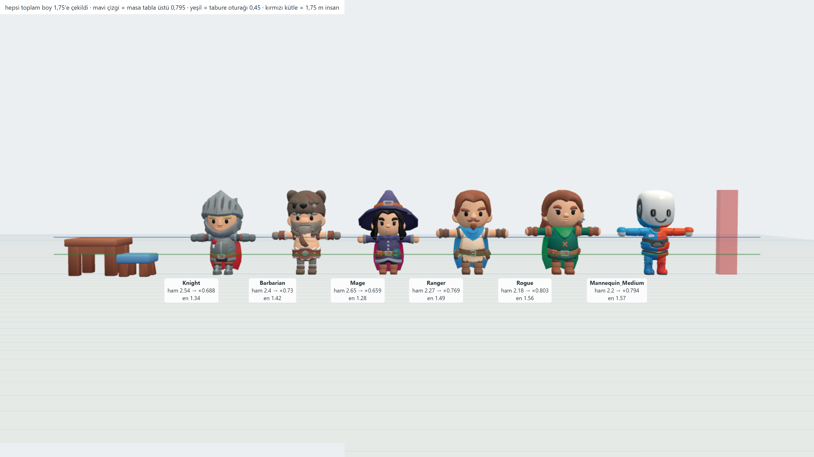
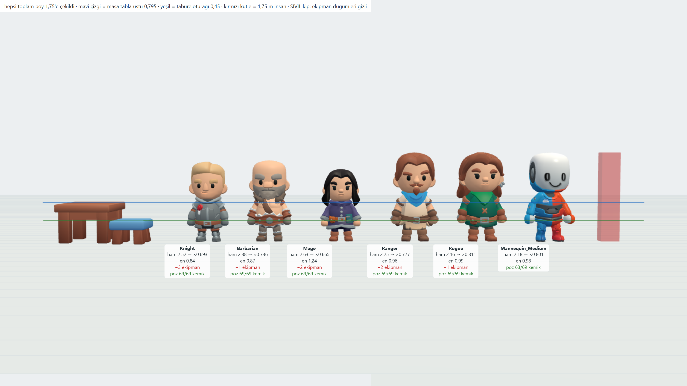
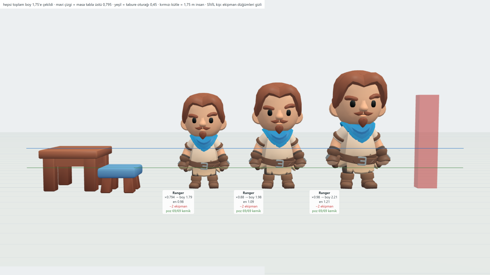
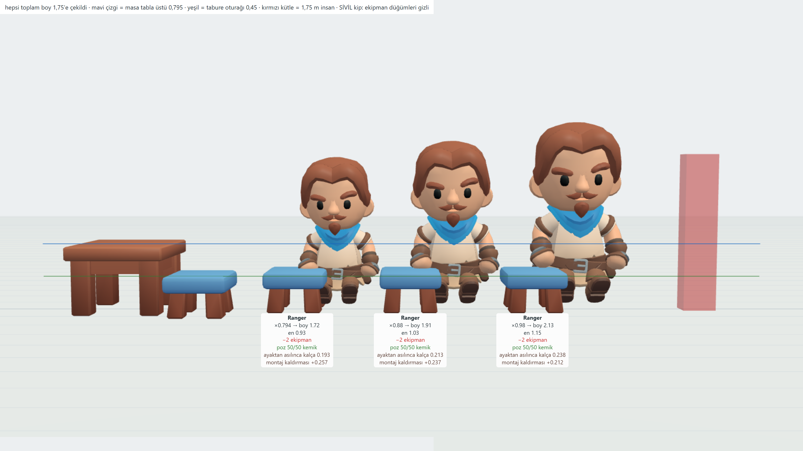
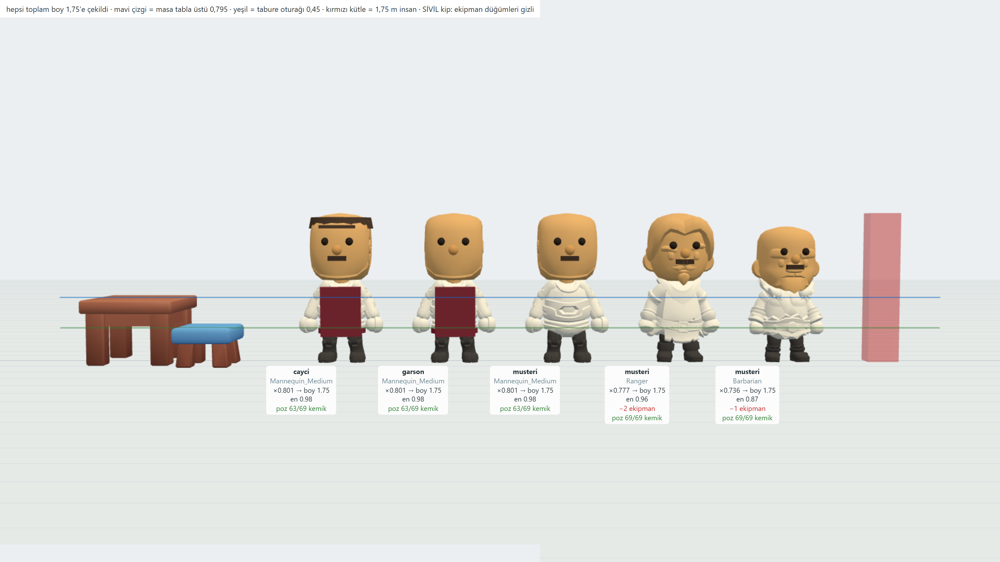
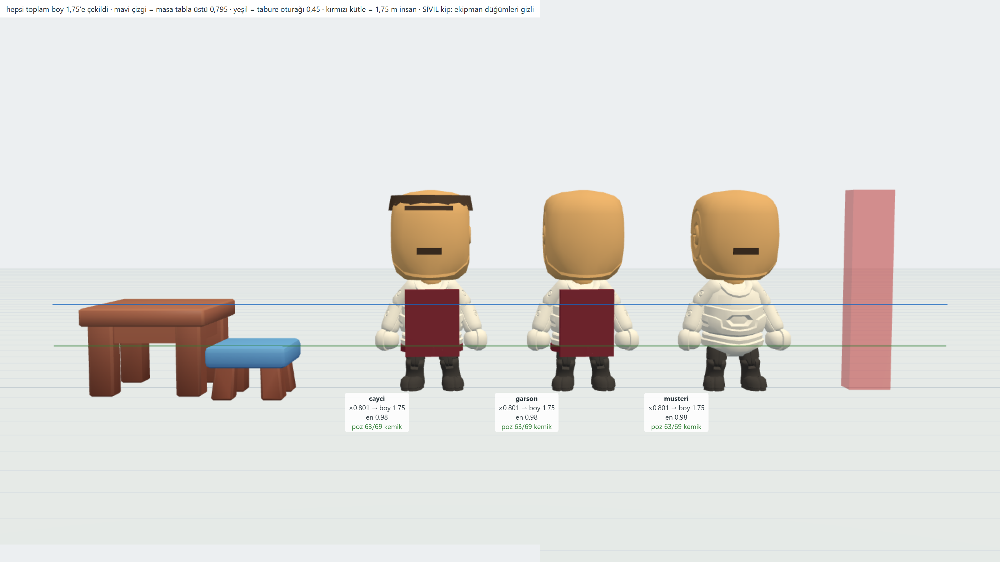
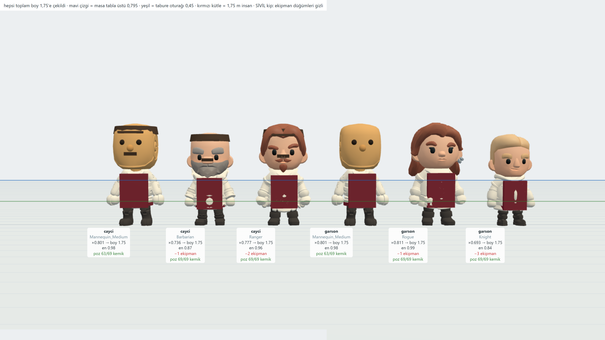
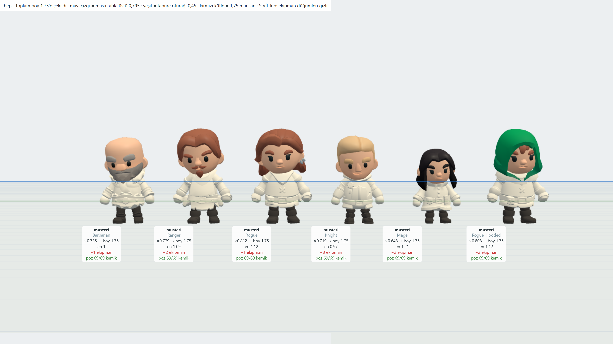
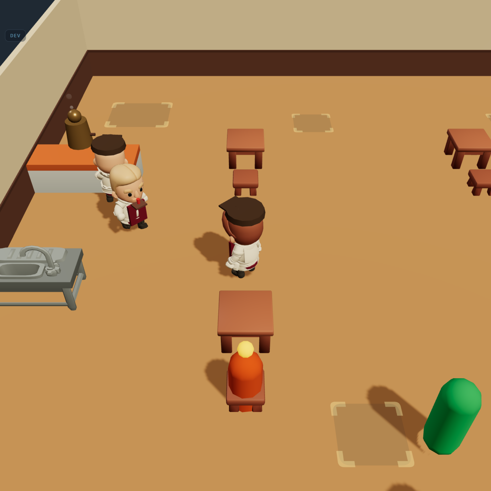

S14 · ölçüm turu · 14 Eylül 2026
Asset panosu §3 altı kol yazmıştı ve hepsi tek bir hükme dayanıyordu: “KayKit’in karakter paketlerinin hepsi fantezi; sivil görünüm için mesh düzenleme + yeniden dokulama gerekir, birkaç oturum.” O pano hiçbir paket indirilmeden yazıldı. Bu tur sekiz ücretsiz paket indi ve kollar dosyadan ölçüldü. Üç hüküm çürüdü.
Soldaki masa ve tabure oyunun kendi donmuş ölçüleri (tabla üstü 0,795 · oturak 0,45). Mavi çizgi masa tablası, yeşil çizgi tabure oturağı, sağdaki kırmızı kütle 1,75 m insan.

Miğfer, pelerin, ayı başlığı, cadı şapkası. Panonun gördüğü şey bu — ve doğru gördü.
Tek fark: visible = false. Ayrıca hepsine başka bir dosyadaki
Idle_A klibi uygulandı — poz tutuyorsa iskelet aynı demektir.

Gri tunikli adam · sakallı kel adam · mor paltolu biri · atkılı adam · yeşil tunikli kadın. Hiçbiri kılıç/zırh okumuyor.
Knight 3 düğüm · Mage 2 · Ranger 2 · Barbarian 1 · Rogue 1. Sökülen 84–1030 üçgen. Mesh düzenleme yok.
Bugünkü gövdede baş boyun %33’ü; KayKit’te %50. Omuz eni birebir tutuyor (0,58 ↔ kapsül 0,60) ama düşey oran kayıyor: aynı adam üç ölçekte, aynı masanın yanında.

| kol | ölçek | boy | masa tablası nereye geliyor |
|---|---|---|---|
| Ö1 toplam-boy | ×0,794 | 1,79 | göğüs — mobilya büyük okunur |
| Ö2 ara | ×0,88 | 1,98 | göğüs altı |
| Ö3 gövde-hizası | ×0,98 | 2,21 | bel — gerçek insan oranı |
ACTOR_HEIGHT 1,75 yerinde kalır, türeyen hiçbir sayı değişmez.
1,75’ten türeyen her şey yeniden ölçülür: yarıçaplar, kamera bakış yüksekliği, baloncuk, oturma kayması, masaya erişim, nav ızgarası.
Dövüş klipleri ayrı dosyalarda — alınmaz. Kıraathanenin fiilleri:
| dosya | KB | klip | işe yarayan |
|---|---|---|---|
General | 809 | 15 | Idle · Interact · PickUp · Use_Item |
MovementBasic | 673 | 11 | Walking A/B/C · Running A/B |
Simulation | 836 | 14 | Sit_Chair_Down / Idle / StandUp · Waving |
Tools | 1427 | 29 | Holding A/B/C · Working A/B/C |

Kalça sayısı taburenin altında görünüyor çünkü gövde burada ayağı zemine
yapışacak şekilde konuldu; oturma klibi gövdeyi rig köküne göre kurar. Çıkan fark
modelin kusuru değil, montaj kaldırması — bugünkü SEATED_DROP’un
skinned karşılığı. Ölçek kolu bu sayıya göre değil, ayakta ölçülen ilişkiye göre seçilir.
Bugün gövde SEATED_DROP ile 0,45 aşağı indiriliyor; actor.ts
kendi yorumunda “gerçek oturuş pozu Faz 6’da skinned modelle gelir” diye yazmış. Geldi.
Müşteriler bugün tek InstancedMesh (1 çizim çağrısı, 128 kapasite). Skinned gövde instance edilemez. Ölçüm masaüstü GPU’sunda; mutlak sayı telefona taşınmaz, oran taşınır.
| N | bugün (instanced) | skinned | kare × | çizim × |
|---|---|---|---|---|
| 5 | 0,04 ms · 1 çizim | 0,60 ms · 40 çizim | 15 | 40 |
| 12 | 0,04 ms · 1 çizim | 1,11 ms · 96 çizim | 28 | 96 |
| 24 | 0,05 ms · 1 çizim | 2,20 ms · 192 çizim | 44 | 192 |
| 48 | 0,04 ms · 1 çizim | 4,02 ms · 384 çizim | 101 | 384 |
5 kişi = 40 çizim. Sahip, garson, bulaşıkçı, çaycı zaten tekil çiziliyor.
24 müşteri = 192 çizim; mobil bütçe tipik 100–200. Gövde 8 parçaya bölük olduğu için karakter başına 8 çağrı.
public/assets/models/ bugün 17,2 MB. İndirilen 8 paketin hiçbiri repoya girmedi.
Oran/boyut onaylandı, konsept reddedildi — ve haklı çıktı: ekipmanı sökünce altından ortaçağ derisi, kemer, bilek bandı çıkıyor ve onlar GEOMETRİDE, renkte değil. Aranan şey (KayKit oranında, modern/sivil, CC0) hiçbir kaynakta yok — ama ölçüm başka bir kapı açtı.
itch CC0 + low-poly + rigged taramaları ya gerçekçi oran ya PSX/voxel veriyor.
14 karakterde sivil olan: Series 6 The Farmers · Series 5 The Hiker, The Protagonists, The Helpers. Yani paket başına 2–3; kıraathane değil.
6 düz parça mesh — yani kıyafet parça rengi demek (D-013 flat-shaded’in istediği şey).
Kimlik ise bugün Player.tsx’te zaten elle çizili olan kasket + bıyık +
önlükten geliyor; onlar artık kemiğe takılıyor, yani yürüme/oturma klibi onları da taşıyor.

Boş gövde + oyunun paleti + kemiğe takılı kasket · bıyık · göz · burun · önlük. Deri/kemer/zırh hiç yok. Bedel: saç yok, yüz bizim eklediğimiz kadar.
Ranger ve Barbarian düz kıraathane rengine boyanınca ortaçağ okumasından çıkıyor. Kazanç: saç ve sakal geometrisi hazır geliyor. Bedel: kemer/askı kabartması duruyor.

Gövde ve renkler oyunun kendi paletinden (krem gömlek · koyu pantolon · bordo önlük ·
kasket). Eksik olan tek şey yüz: manken boş kafa geliyor — göz/burun bugün
Player.tsx’te zaten çizili, onlar da başa takılır. Yani bu bir asset
seçimi değil, bizim karakterimiz KayKit’in iskeleti ve oranı üstünde.
Üçüncü tur. Önceki denemede gövdeyi düz boyamak saçı da yutuyordu (Barbarian’ın sakalı ten rengine dönmüştü). Düzeltildi: baş kendi dokusunda kalıyor — yüz, saç, sakal oradan geliyor — gövde ve bacak oyunun paletine boyanıyor, kimlik parçaları (kasket · önlük) kemiğe takılıyor. Ortaçağ derisi böylece kıyafetin altında kalmıyor, kıyafet oluyor.

Soldan: manken çaycı (boş yüz) · Barbarian çaycı (ak sakallı, kasketli) · Ranger çaycı (bıyıklı) · manken garson · Rogue garson (kadın) · Knight garson (sarışın genç). Mankende yüz bizim eklediğimiz kadar; Adventurer gövdelerinde yüz ve saç hazır geliyor.

Ak sakallı amca · bıyıklı adam · kızıl saçlı kadın · sarışın genç · siyah saçlı kadın ·
kapüşonlu. Salon kalabalığı için yüz/saç çeşitliliği bedavaya geliyor.
Gömlek rengi şu an hepsinde aynı krem — müşteri başına palet renginden seçmek
tek satır (feedback_color_variety).
Karar uygulandı: sahip · garson · bulaşıkçı · çaycı artık KayKit gövdeleri, oyunun paletine boyalı, kasket ve önlük kemiğe takılı. Müşteriler bu turda bilerek kapsül kaldı — kesme çizgisi yeşil bir ara durum.

ACTOR_HEIGHT 1,75 ve ondan türeyen hiçbir sayı: yarıçaplar,
kamera bakış yüksekliği, baloncuk, masaya erişim, nav ızgarası. Denge dosyaları
bu turda hiç açılmadı.
tests/karakter.test.ts 11 denetim, 15 mutasyon, kaçan 0.
İlk turda 2 kaçtı ve ikisi de gerçek zayıflıktı — kural iki yerde yazılıydı, klon
denetimi dizgeye bakıyordu. İkisi de kapatıldı.
Sırada S15: müşteriler skinned'e geçer. 24 müşteri bugün 1 çizim çağrısı; skinned'de 192 olur. Azaltma kolu ölçüldü: tek materyal → parçalar birleştirilince 24.
Ölçüm turu · karar kullanıcıya bırakıldı. Araçlar tools/olcum-karakter.mjs ·
tools/karakter-bak.mjs · tools/skin-perf.mjs; ham çıktı
docs/olcum-karakter.json · docs/olcum-skin-perf.txt; rapor
docs/karakter-raporu-s14.md (§Karar D-112 ile dolduruldu).